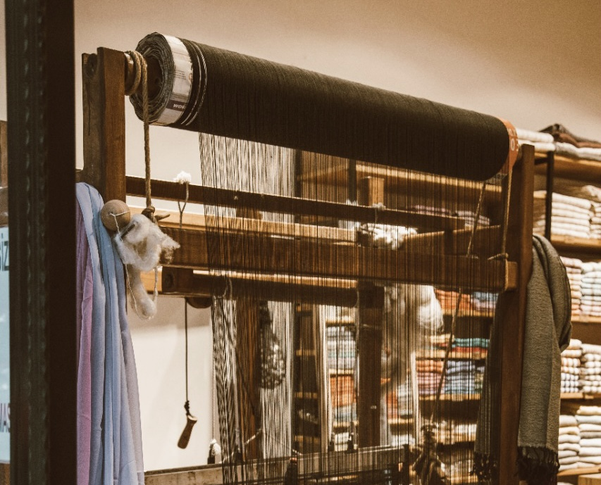

- Design and planning: The company will work with architects, engineers and other professionals to design and plan the construction project, taking into account factors such as functionality, cost, and safety.
- Site preparation: The company will prepare the construction site, including clearing any debris, grading the land, and installing any necessary infrastructure such as roads and utilities.
- Procurement: The company will acquire the materials and equipment needed for the construction project, such as steel, concrete, and heavy machinery.
- Construction: The company will construct the building or facility, following the plans and specifications established during the design and planning phase.
- Quality control: The company will implement quality control measures to ensure that the construction project is built according to code and meets the required standards.

- Fiber production: The first step in textile production is the creation of fibers, either through natural processes or chemical synthesis. Common natural fibers include cotton, wool, and silk.
- Spinning: The fibers are then spun into yarns using spinning machines. This process involves drawing out the fibers, twisting them together to add strength, and winding them onto bobbins or spools.
- Weaving or Knitting: The yarns are then woven or knitted together to create fabric. Weaving involves interlacing yarns at right angles to create a flat fabric.
- Finishing: The fabric is then finished through a series of processes such as dyeing, printing, and softening to enhance the appearance, feel and durability of the fabric.
- Quality control: Quality control is a critical part of textile production, with inspections and tests conducted at various stages of the process to ensure the fabric meets the required standards for strength.
- Site investigation and analysis: The company will conduct a thorough investigation of the site, including geotechnical and geological analysis, to determine the feasibility of the tunneling project.
- Tunnel design and planning: The company will work with engineers and other professionals to design and plan the tunnel, taking into account factors such as safety, cost, and construction method.
- Tunnel excavation: The company will excavate the tunnel using specialized equipment and techniques, such as drilling, blasting, and tunnel boring machines.
- Tunnel lining and support: The company will install the tunnel lining and support systems, such as concrete segments or steel ribs, to ensure the stability and safety of the tunnel.
- Safety and quality control: The company will implement safety measures to protect workers and the public during the tunneling processSafety and quality control.
- Cotton harvesting: The first step in the cotton ginning process is the harvesting of cotton from the field. This is typically done by hand or by machine and the cotton is picked in a raw form, called as "Lint cotton".
- Cleaning: The raw cotton is then cleaned to remove impurities such as leaves, stems, and other debris. This is typically done using machines such as cotton cleaners and gin stands.
- Ginning: The cleaned cotton is then passed through a cotton gin, which separates the cotton fibers from the seeds.
- Baling: The ginned cotton is then compressed into bales using a cotton baler. These bales are then wrapped and tied for storage and transportation.
- Quality control: Quality control is critical in the cotton ginning process. Cotton is inspected for any impurities, and grading is done based on various properties like fiber length, strength, color, and micronize